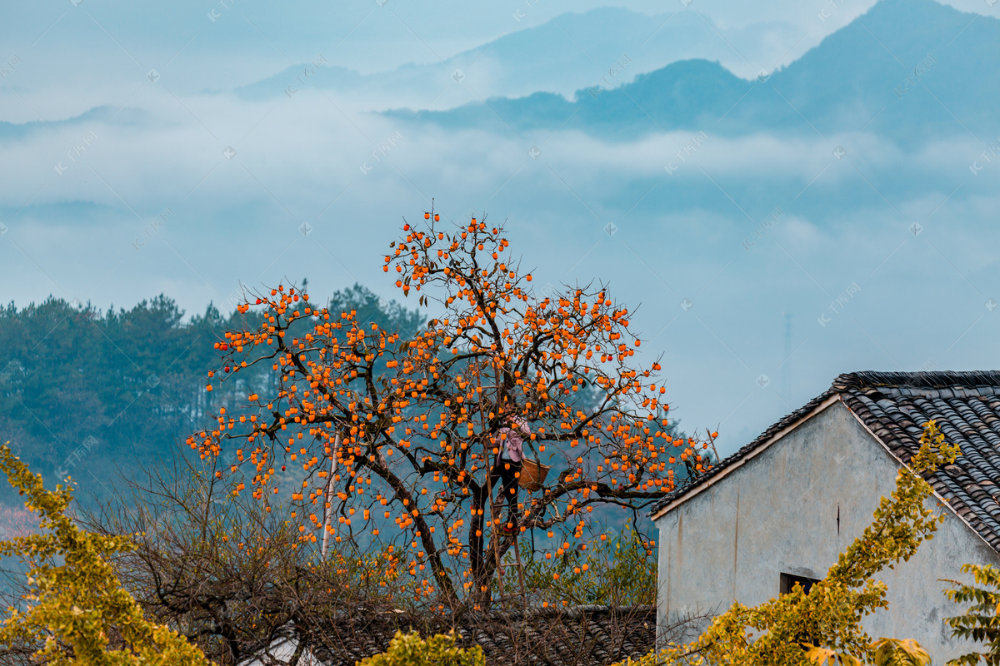

柿子园四季景色各异，每个季节都有其独特的魅力。通过摄影，我们可以记录下柿子园最美的瞬间，感受大自然的鬼斧神工。
四季摄影主题
柿子园四季都有不同的拍摄主题：
- 春季：新芽萌发，生机盎然
- 夏季：绿叶繁茂，果实初现
- 秋季：硕果累累，金黄满园
- 冬季：枝干遒劲，意境深远
拍摄技巧指导
专业摄影师将为您提供以下指导：
- 光线运用：掌握最佳拍摄时间
- 构图技巧：突出柿子园特色
- 器材选择：适合的摄影设备
- 后期处理：提升照片品质
特色拍摄点
柿子园设有多个特色拍摄点：
- 观景台：俯瞰柿子园全景
- 林间小径：近距离拍摄果实
- 古树区：记录百年柿树
- 文化展示区：拍摄人文景观
活动安排
摄影之旅包含以下内容：
- 专业摄影指导
- 器材使用指导
- 实地拍摄实践
- 作品点评交流
温馨提示
为了获得最佳拍摄效果，请注意：
- 携带适合的摄影器材
- 注意天气变化
- 遵守园区规定
- 保护园区环境
通过这次摄影之旅，我们希望能够让更多人用镜头记录柿子园的美，感受大自然的魅力。同时，我们也期待能够与更多摄影爱好者分享拍摄技巧。
欢迎您参与这次独特的柿子摄影之旅，让我们一起用镜头记录柿子园的四季之美。